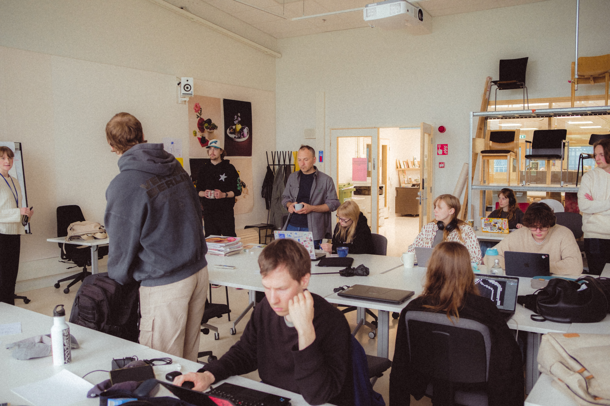
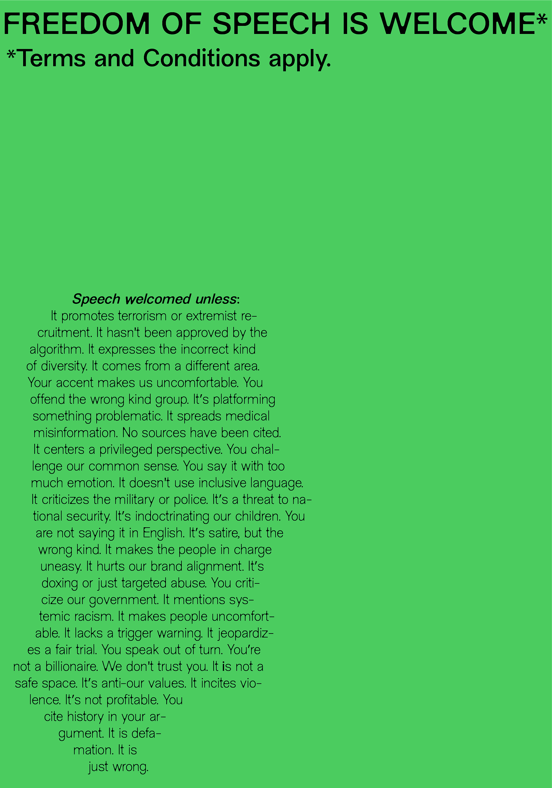

Poster Triennial @ Grafia
Selected for the 50th Lahti International Poster Triennial, exhibited at Grafia, Helsinki, exploring typographic hierarchy and visual tension.
2025 · Graphic Designer
CONCEPT
Selected for the 50th Lahti International Poster Triennial poster-a-thon, focused on the theme of Freedom of Expression. My poster "Free Speech versus Hate Speech" explores the fragile boundary between open discourse and harmful rhetoric, using typographic containment as a visual metaphor for structural limits on expression.
PROCESS
Worked within a week-long intensive poster-a-thon format, iterating rapidly from concept sketches to final printed output. Explored multiple directions around structural limits of expression before landing on the final composition, which uses rigid containment frames to contrast with the organic nature of free speech.
MATERIALS / FORMAT
A1 poster, selected for exhibition at Grafia, Helsinki.
REFLECTION
The constrained timeline pushed me to work decisively, relying on strong conceptual foundations rather than over-polishing. Having the work exhibited at Grafia was a meaningful validation of the approach.



